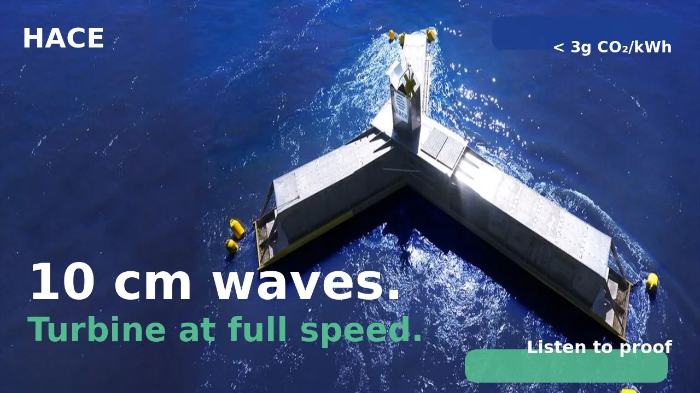

Dr. Jean-Luc Stanek
Executive President / CEO
Knight of Maritime Merit
We turn waves into electricity. Clean, competitive, available 24/7.
Three fundamental breakthroughs that change the economics of wave energy.
Current wave energy converters poorly adapt to varying wave conditions. Sized for a narrow range, they underperform in calm seas and shut down in rough ones. Result: low capacity factor and energy costs that never come down.
Every system is custom-designed for its specific site to maximize capacity factor — the key to economic viability. Low electricity cost is a direct consequence of this approach.
Intermittency is the Achilles' heel of all renewable energy: solar, wind, and current wave converters all stop or go into protection mode the moment conditions exceed their operating range. Every hour of downtime drops the capacity factor and makes the business model unsustainable.
HACE produces in the worst conditions — cyclones, rogue waves, tsunamis. The rougher the sea, the higher the output. The system is unsinkable and designed to last over 50 years.
The complexity of some wave energy converters prevents mass deployment. They require heavy, expensive equipment — high-capacity cranes, specialized vessels, custom components.
HACE can be built in any shipyard, without heavy equipment. Oscillating water columns in standard steel, industrial mass-production approach. Over 95% recyclable.
10 cm waves. Turbine at full speed.



Wave energy addresses concrete, creditworthy and growing markets on every coastline in the world.
Theoretical potential estimated by the IEA. Global electricity consumption is about 25,000 TWh/year. Wave energy alone could meet that demand.
Islands, coastal areas, developing countries: structural demand for decarbonized energy and fresh water through desalination.
IMO and EU regulations underway. HACE provides "Absolute Zero" energy for ports, H₂ bunkering and shore power.
Island territories (diesel cost 300-500€/MWh), European Atlantic coasts, African coastlines, Caribbean and South Pacific.
HACE and its partner SHZ bring together the two missing links to make green hydrogen competitive at scale: non-intermittent ultra low-carbon energy, and revolutionary storage.
Stable, non-intermittent, ultra low-carbon energy (from 15€/MWh, < 3g eqCO₂/kWh) to power electrolyzers continuously.
The electrolyzer is operated by the industrial client or a certified partner. HACE provides the ideal energy to run it at full capacity, continuously, at the lowest possible cost.
H₂ tanks 20× lighter than existing: 1 ton of tank per 1 ton of H₂ transported. Partner chosen by NASA for the future hydrogen aircraft.
Auxiliary solutions for green H₂ use. Decarbonization of land, sea and air transport.
Global alliance of 50+ actors. HACE provides "Absolute Zero" energy for ships and ports.
Eliminates the main factors responsible for coastal erosion by phase-shifting water molecule orbitals.
Promotes natural beach sediment replenishment, without artificial intervention.
No polluting fluids, zero concrete, bio-dynamic anchoring. Positive impact on biodiversity.
Energy + coastal protection reduces cost per use. Floating breakwaters, marinas, coastal installations.
"HACE technology integrates perfectly into our port energy transition strategy. Its social acceptance and respect for biodiversity are major assets."
"Electricity was produced using HACE's wave energy technology, even during very low swell. The trial looks promising for this first phase."
"HACE goes further by providing fresh water and preventing coastal erosion. ZESTAs is delighted to partner with visionaries who address both mitigation and adaptation to climate change within a single technology."
« En tant que professionnels de la mer, nous voyons dans HACE une solution compatible avec nos activités. La coastal protection est un bonus considérable. »
"Electricity and hydrogen from ocean waves. A French technology being industrialized."
HACE uses the Multiple Oscillating Water Columns principle. Waves enter open chambers underwater, compress air through one-way valves, creating a continuous airflow that drives a turbine. The system works like a piston engine powered by waves, optimized across the entire swell spectrum.
Yes. HACE captures energy from all waves, even chaotic ones, from 5 cm to over 30 m. Unsinkable, resistant to cyclones, rogue waves and tsunamis. Validated lifespan over 50 years through calculations and numerical simulations.
Under 3g eqCO₂/kWh over full lifecycle. Comparison: solar ~40g, wind ~11g, nuclear ~6g. HACE achieves this through 95% recyclable steel construction, without concrete.
LCOE from 15€/MWh for large well-located farms (North Sea, Iroise). As with solar or wind, the final price depends on installation size, site and grid connection. The high capacity factor (50-90% depending on site) and site-specific design are the keys to this competitiveness.
Stable non-intermittent production ideal for continuous electrolyzers. Result: green H₂ under 2€/kg. In partnership with SHZ (20x lighter storage) and H2X (end-use ecosystems).
Minimal impact: zero concrete, no polluting fluids, under 5 m above water, bio-dynamic anchoring. Bonus: active coastal erosion protection and natural beach replenishment.
Engineers, offshore experts, financiers and industrialists — a multidisciplinary team driving the marine energy transition.
Executive President / CEO
Knight of Maritime Merit

R&D Director
Ex-Airbus · Aerodynamics expert

R&D Expert

Offshore operations expert

Financial expert & investor

Legal expert

Industrial expert

Commercial director

IT & Cybersecurity director
Investors, industrial partners, communities: join the HACE project.
Executive President / CEO — Knight of Maritime Merit